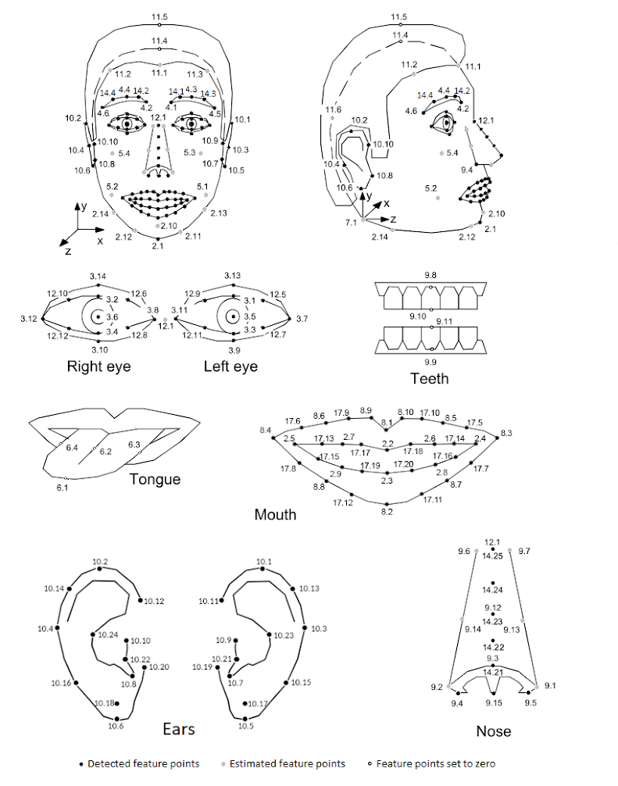
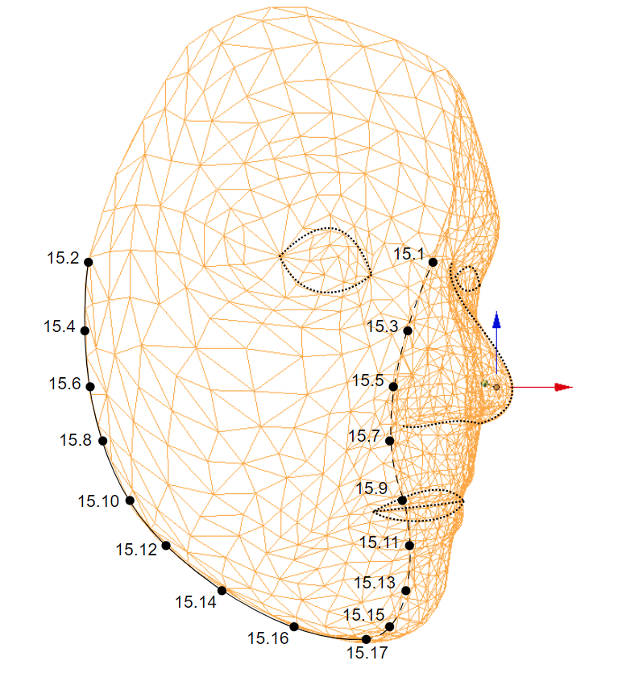
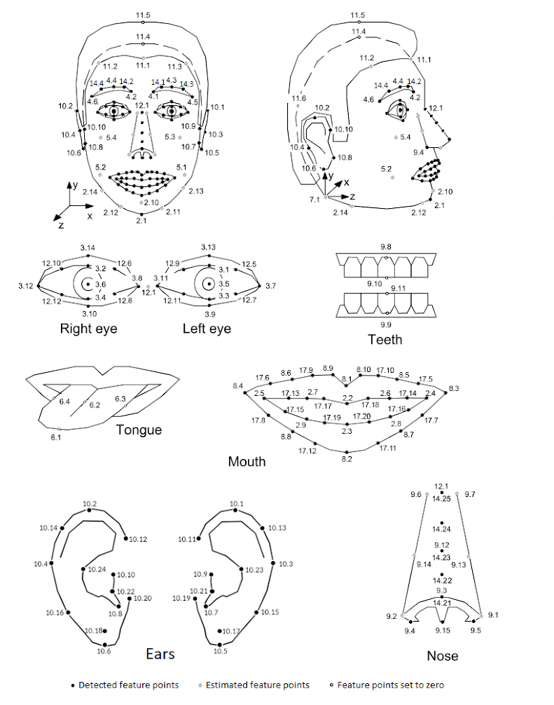
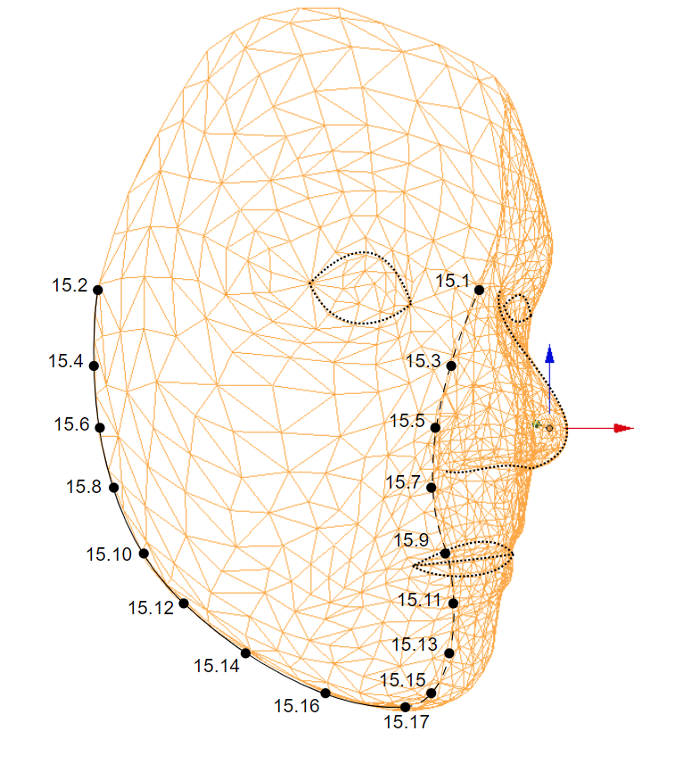

new FDP()
Feature points of a face.
This class is a container for facial feature points as defined by MPEG-4 FBA standard, as well as some additional feature points. Feature points are identified by their group (for example, feature points of the nose constitute their own group) and index. So, for example, the tip of the chin belongs to group 2 and has index 1, so it is identified as point 2.1. The identification of all MPEG-4 feature points is illustrated in the image below:
 
Groups 2 - 11 contain feature points defined according to the MPEG-4 FBA standard, and groups 12, 14 and 17 contain additional feature points that are not part of the MPEG-4 standard (12.1, 12.5, 12.6, 12.7, 12.8, 12.9, 12.10, 12.11, 12.12, 14.1, 14.2, 14.3, 14.4, 14.21, 14.22, 14.23, 14.24, 14.25, 17.5 - 17.20).
Group 15 contains the physical contour points (15.1-15.17). Please note that point 15.17 is exactly identical to point 2.1 (2.1 point exists for MPEG-4 compatibility purposes).
FDP class stores feature point information. It also provides functions for reading and writing the feature point data as files, as well as certain auxiliary members that deal with normalisation of feature points and their classification according to facial region.
The actual data for each feature point is stored in the structure FeaturePoint. One such structure is allocated for each feature point. To access a feature point, use one of the functions getFP() that access a feature point by its group and index expressed either as integer values, or as a string (e.g. "2.1"). Functions getFPPos() are available as a convenience, to access the feature point coordinates directly, without first accessing the FeaturePoint structure.
The feature points may relate to a particular 3D model. In such a case it is interesting to know, for each feature point, to which vertex it belongs. For this purpose, the FeaturePoint structure contains the mesh identifier and vertex index that correspond to the feature point and the FDP class provides functions to access this data.
Left-right convention
References to left and right in feature point definitions are given from the perspective of the face itself so "right eye" can be imagined as "my right eye". When referring to feature points in an image, it is assumed that image is taken by camera and not mirrored so "right eye" is on the left in the image, as shown in feature points illustration above.
This class is a container for facial feature points as defined by MPEG-4 FBA standard, as well as some additional feature points. Feature points are identified by their group (for example, feature points of the nose constitute their own group) and index. So, for example, the tip of the chin belongs to group 2 and has index 1, so it is identified as point 2.1. The identification of all MPEG-4 feature points is illustrated in the image below:
 
Groups 2 - 11 contain feature points defined according to the MPEG-4 FBA standard, and groups 12, 14 and 17 contain additional feature points that are not part of the MPEG-4 standard (12.1, 12.5, 12.6, 12.7, 12.8, 12.9, 12.10, 12.11, 12.12, 14.1, 14.2, 14.3, 14.4, 14.21, 14.22, 14.23, 14.24, 14.25, 17.5 - 17.20).
Group 15 contains the physical contour points (15.1-15.17). Please note that point 15.17 is exactly identical to point 2.1 (2.1 point exists for MPEG-4 compatibility purposes).
FDP class stores feature point information. It also provides functions for reading and writing the feature point data as files, as well as certain auxiliary members that deal with normalisation of feature points and their classification according to facial region.
The actual data for each feature point is stored in the structure FeaturePoint. One such structure is allocated for each feature point. To access a feature point, use one of the functions getFP() that access a feature point by its group and index expressed either as integer values, or as a string (e.g. "2.1"). Functions getFPPos() are available as a convenience, to access the feature point coordinates directly, without first accessing the FeaturePoint structure.
The feature points may relate to a particular 3D model. In such a case it is interesting to know, for each feature point, to which vertex it belongs. For this purpose, the FeaturePoint structure contains the mesh identifier and vertex index that correspond to the feature point and the FDP class provides functions to access this data.
Left-right convention
References to left and right in feature point definitions are given from the perspective of the face itself so "right eye" can be imagined as "my right eye". When referring to feature points in an image, it is assumed that image is taken by camera and not mirrored so "right eye" is on the left in the image, as shown in feature points illustration above.
Methods
-
getFP(group, n) → {FeaturePoint}
-
Get a feature point by its group and index.
Note: After the end of use, obtained FeaturePoint needs to be deleted to release the allocated memory. Example:var left_eye_fp = faceData.getFeaturePoints2D().getFP(3,5); var right_eye_fp = faceData.getFeaturePoints2D().getFP(3,6); ... left_eye_fp.delete(); right_eye_fp.delete();
Parameters:
Name Type Description groupnumber Feature point group. Valid range is from FP_START_GROUP_INDEX to FP_END_GROUP_INDEX. nnumber Feature point index. Valid range is from 1 to the size of particular group. Group sizes can be obtained using groupSize(). Returns:
Feature point object corresponding to the group and index- Type
- FeaturePoint
-
setFP(group, n, featurePoint)
-
Set a feature specified by its group and index.
Parameters:
Name Type Description groupnumber Feature point group. Valid range is from FP_START_GROUP_INDEX to FP_END_GROUP_INDEX. nnumber Feature point index. Valid range is from 1 to the size of particular group. Group sizes can be obtained using groupSize(). featurePointFeaturePoint The feature point object to set. -
setFP(name, featurePoint)
-
Set a feature specified by its name.
Parameters:
Name Type Description namestring Feature point name (e.g. "7.1"). featurePointFeaturePoint The feature point object to set. -
getFPPos(group, n) → {Float32Array}
-
Get the position of a feature point specified by its group and index.
Parameters:
Name Type Description groupnumber Feature point group. Valid range is from FP_START_GROUP_INDEX to FP_END_GROUP_INDEX. nnumber Feature point index. Valid range is from 1 to the size of particular group. Group sizes can be obtained using groupSize(). Returns:
Vertex position (array of 3 numbers).- Type
- Float32Array
-
setFPPos(group, n, x, y, z)
-
Set the position of a feature point specified by its group and index.
Parameters:
Name Type Description groupnumber Feature point group. Valid range is from FP_START_GROUP_INDEX to FP_END_GROUP_INDEX. nnumber Feature point index. Valid range is from 1 to the size of particular group. Group sizes can be obtained using groupSize(). xnumber Vertex x position. ynumber Vertex y position. znumber Vertex z position. -
getFPQuality(group, n)
-
Get the quality of a feature point specified by its group and index.
Parameters:
Name Type Description groupnumber Feature point group. Valid range is from FP_START_GROUP_INDEX to FP_END_GROUP_INDEX. nnumber Feature point index. Valid range is from 1 to the size of particular group. Group sizes can be obtained using groupSize(). -
setFPQuality(group, n, quality)
-
Set the quality of a feature point specified by its group and index.
Parameters:
Name Type Description groupnumber Feature point group. Valid range is from FP_START_GROUP_INDEX to FP_END_GROUP_INDEX. nnumber Feature point index. Valid range is from 1 to the size of particular group. Group sizes can be obtained using groupSize(). qualitynumber quality value. -
setFPPos(name, x, y, z)
-
Set the position of a feature point specified by its name.
Parameters:
Name Type Description namestring Feature point name (e.g. "7.1"). xnumber Vertex x position. ynumber Vertex y position. znumber Vertex z position. -
reset()
-
Resets all feature points.
The value of all feature points is set to "undefined".
-
FPIsDefined(group, n) → {boolean}
-
Parameters:
Name Type Description groupnumber Feature point group. Valid range is from FP_START_GROUP_INDEX to FP_END_GROUP_INDEX. nnumber Feature point index. Valid range is from 1 to the size of particular group. Group sizes can be obtained using groupSize(). Returns:
True if the feature point is defined, false otherwise.- Type
- boolean
-
FPIsDetected(group, n) → {boolean}
-
Parameters:
Name Type Description groupnumber Feature point group. Valid range is from FP_START_GROUP_INDEX to FP_END_GROUP_INDEX. nnumber Feature point index. Valid range is from 1 to the size of particular group. Group sizes can be obtained using groupSize(). Returns:
True if the feature point is detected, false otherwise.- Type
- boolean
-
FPIsValid(group, n) → {boolean}
-
Returns true if specified feature point identifier is valid. Identifier is valid if it consists of feature point group and feature point index within valid ranges.
Note: The method is static meaning it is accessible directly from the FDP object's constructor. Example:var isPointValid = VisageModule.FDP.FPIsValid(group, n);Parameters:
Name Type Description groupnumber Feature point group. Valid range is from FP_START_GROUP_INDEX to FP_END_GROUP_INDEX. nnumber Feature point index. Valid range is from 1 to the size of particular group. Group sizes can be obtained using groupSize(). Returns:
True if specified feature point identifier is valid, false otherwise.- Type
- boolean
-
FPIsValid(name) → {boolean}
-
Returns true if specified feature point identifier is valid. Identifier i.e. feature point name is valid if it consists of feature point group and feature point index within valid ranges and is of the correct format. Valid range for feature point group is from FP_START_GROUP_INDEX to FP_END_GROUP_INDEX. Valid range for feature point index is from 1 to the size of particular group.
Note: The method is static meaning it is accessible directly from the FDP object's constructor. Example:var isPointValid = VisageModule.FDP.FPIsValid("2.1");Parameters:
Name Type Description namestring Feature point name (e.g. "7.1"). Returns:
True if specified feature point identifier is valid, false otherwise.- Type
- boolean
-
getFPName(group, n) → {string}
-
Get feature point name from group and index.
Note: The method is static meaning it is accessible directly from the FDP object's constructor. Example:
The method is static and should be calledvar pointName = VisageModule.FDP.getFPName(group, n);Parameters:
Name Type Description groupnumber Feature point group. Valid range is from FP_START_GROUP_INDEX to FP_END_GROUP_INDEX. nnumber Feature point index. Valid range is from 1 to the size of particular group. Group sizes can be obtained using groupSize(). Returns:
Feature point name.- Type
- string
-
groupSize(group) → {number}
-
Get the size of the specified feature point group. Valid range for group is from FP_START_GROUP_INDEX to FP_END_GROUP_INDEX.
Note: The method is static meaning it is accessible directly from the FDP object's constructor. Example:var groupSize = VisageModule.FDP.groupSize(group);Parameters:
Name Type Description groupnumber Feature point group. Valid range is from FP_START_GROUP_INDEX to FP_END_GROUP_INDEX. Returns:
Size of the specified feature point group.- Type
- number
-
getMirrorPointIndex(group, n) → {number}
-
Get the mirror point index for the point defined by given group and index.
Note: The method is static meaning it is accessible directly from the FDP object's constructor. Example:var mirrorPointIndex = VisageModule.FDP.getMirrorPointIndex(group);Parameters:
Name Type Description groupnumber Feature point group. Valid range is from FP_START_GROUP_INDEX to FP_END_GROUP_INDEX. nnumber Feature point index. Valid range is from 1 to the size of particular group. Group sizes can be obtained using groupSize(). Returns:
n of the mirror point (group is the same).- Type
- number